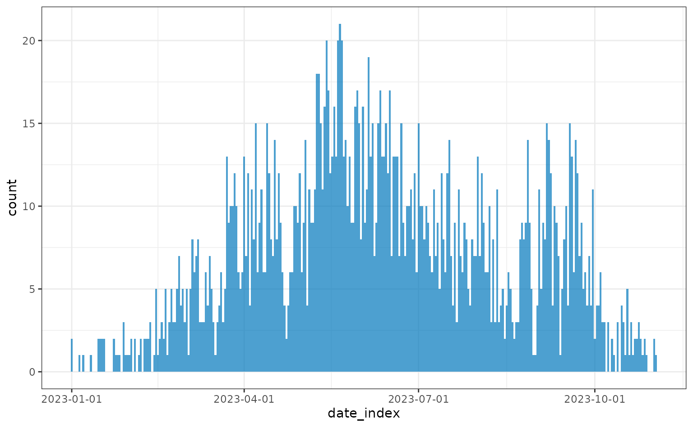
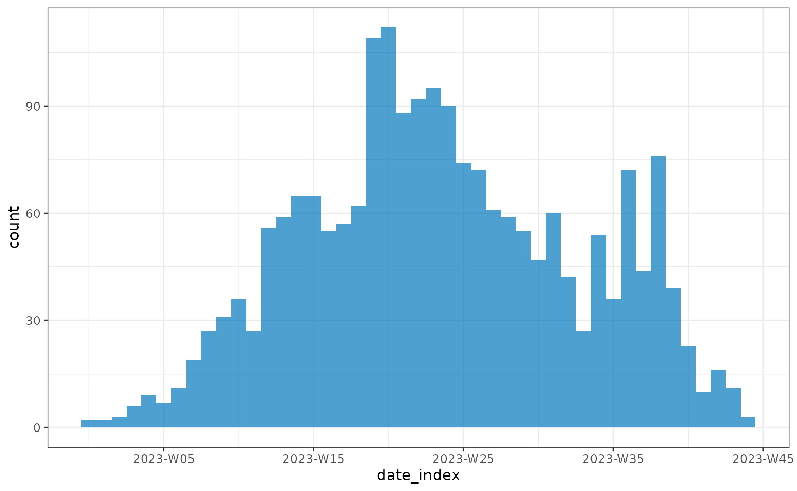
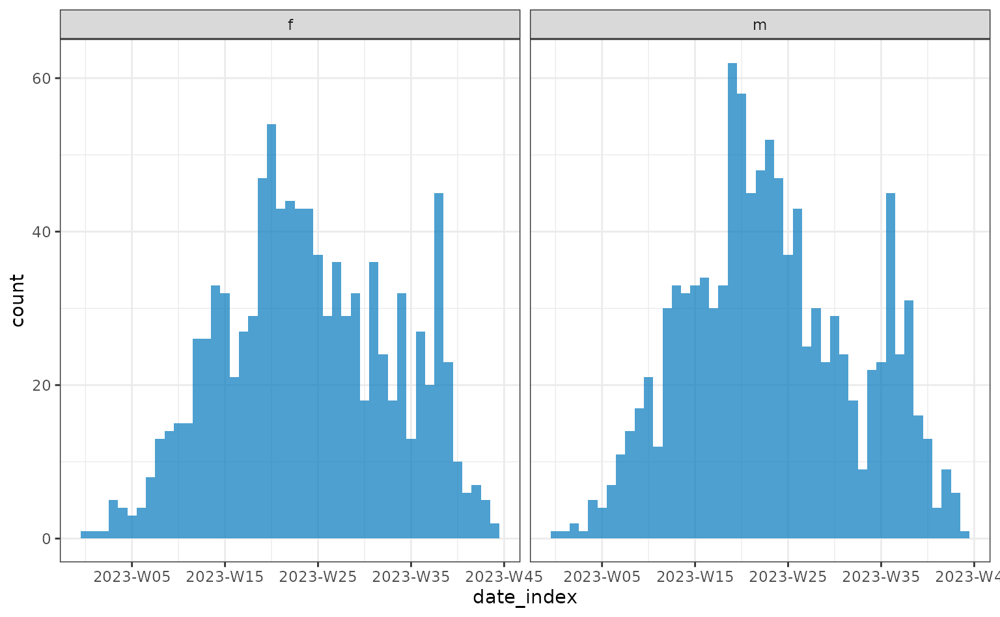

This vignette gives an overview of the ways to plot the line list and
contacts data output from the sim_linelist() and
sim_outbreak() functions.
Plotting can be useful to identify certain transmission dynamics and patterns in the simulated data, or just to check that the simulated data looks as expected given how the simulation was parameterised.
library(simulist)
library(epiparameter)
library(incidence2)
#> Loading required package: grates
library(ggplot2)
library(epicontacts)
library(tidyr)
library(dplyr)
#>
#> Attaching package: 'dplyr'
#> The following objects are masked from 'package:stats':
#>
#> filter, lag
#> The following objects are masked from 'package:base':
#>
#> intersect, setdiff, setequal, union
library(ggplot2)First we load the required delay distributions using the {epiparameter} package.
contact_distribution <- epiparameter(
disease = "COVID-19",
epi_name = "contact distribution",
prob_distribution = create_prob_distribution(
prob_distribution = "pois",
prob_distribution_params = c(mean = 3)
)
)
#> Citation cannot be created as author, year, journal or title is missing
infectious_period <- epiparameter(
disease = "COVID-19",
epi_name = "infectious period",
prob_distribution = create_prob_distribution(
prob_distribution = "gamma",
prob_distribution_params = c(shape = 3, scale = 2)
)
)
#> Citation cannot be created as author, year, journal or title is missing
onset_to_hosp <- epiparameter(
disease = "COVID-19",
epi_name = "onset to hospitalisation",
prob_distribution = create_prob_distribution(
prob_distribution = "lnorm",
prob_distribution_params = c(meanlog = 1, sdlog = 0.5)
)
)
#> Citation cannot be created as author, year, journal or title is missing
# get onset to death from {epiparameter} database
onset_to_death <- epiparameter_db(
disease = "COVID-19",
epi_name = "onset to death",
single_epiparameter = TRUE
)
#> Using Linton N, Kobayashi T, Yang Y, Hayashi K, Akhmetzhanov A, Jung S, Yuan
#> B, Kinoshita R, Nishiura H (2020). "Incubation Period and Other
#> Epidemiological Characteristics of 2019 Novel Coronavirus Infections
#> with Right Truncation: A Statistical Analysis of Publicly Available
#> Case Data." _Journal of Clinical Medicine_. doi:10.3390/jcm9020538
#> <https://doi.org/10.3390/jcm9020538>..
#> To retrieve the citation use the 'get_citation' functionSetting the seed ensures we have the same output each time the vignette is rendered. When using {simulist}, setting the seed is not required unless you need to simulate the same line list multiple times.
set.seed(123)Using a simple line list simulation with the factory default settings:
linelist <- sim_linelist(
contact_distribution = contact_distribution,
infectious_period = infectious_period,
prob_infection = 0.33,
onset_to_hosp = onset_to_hosp,
onset_to_death = onset_to_death,
outbreak_size = c(500, 1e4)
)This line list contains 2066 cases.
Visualising incidence of onset, hospitalisation and death
This section of the vignette is heavily based upon examples given in the An introduction to {incidence2} package vignette. It is highly recommended to read the documentation supplied in the {incidence2} package to explore the full range of functionality.
To visualise the number of cases with onset on a particular day, the
{incidence2} package, and its dedicated class
(<incidence2>) are used for handling and plotting
this data.
Currently {simulist} outputs dates that are not rounded to the
nearest day, i.e. it can be half way through a day. This is not obvious
as R prints dates to the nearest day by default, and only by removing
the date class (using unclass()) can you see the decimals
(as R stores dates internally as the number of days since
1970-01-01).
{simulist} stores <Date>s as precise doubles and
not as integer days. This can be misleading as R prints
<Date>s to the nearest day. By default {incidence2}
does not aggregate to the nearest day and without specifying an
interval in incidence() it will aggregate to
the same precision as the data. When supplied with non-whole
<Date>s it will produce this warning.
# create incidence object
daily <- incidence(
x = linelist,
date_index = "date_onset"
)
#> Warning in incidence(): Non-whole <Date> columns detected. These can be
#> confusing as they are displayed without the fractional element and can also
#> cause oddities when plotting. If you are interested in daily incidence,
#> consider removing the fractional part. This can be done prior to calling
#> `incidence()` or, alternatively, by setting the argument `interval = 'day'`
#> within the call itself.The interval = "daily" is required as {incidence2}
requires rounded dates to aggregate cases per unit time and specifying
the interval will do this automatically for us. It is
possible that not every date had the onset of symptoms, resulting in
some dates missing entries. This is taken care of by setting
complete_dates = TRUE, alternatively this can be achieved
by using incidence2::complete_dates() on the
<incidence2> object.
# create incidence object
daily <- incidence(
x = linelist,
date_index = "date_onset",
interval = "daily",
complete_dates = TRUE
)
plot(daily)
Alternatively, incidence can be plotting weekly:
weekly <- incidence(linelist, date_index = "date_onset", interval = "isoweek")
plot(weekly)
In order to check differences between a group in the line list data,
for example sex, the <incidence2> data object can be
recreated, specifying which columns to group by.
weekly <- incidence(
linelist,
date_index = "date_onset",
interval = "isoweek",
groups = "sex"
)
plot(weekly)
The simulated data plotted above used the default equal probability
of each contact and case being male or female. To adjust the probability
that each contact/case is male/female adjust prob_male in
the config argument (see create_config() for
details).
To visualise the onset, hospitalisation and death incidence in the
same plot they can be jointly specified to the date_index
argument of incidence2::incidence().
First the outcome data needs to be pivoted from long data to wide
data to be input into incidence2::incidence().
Reshape line list data
# this can also be achieved with the reshape() function but the user interface
# for that function is complicated so here we just create the columns manually
linelist$date_death <- linelist$date_outcome
linelist$date_death[linelist$outcome == "recovered"] <- NA
linelist$date_recovery <- linelist$date_outcome
linelist$date_recovery[linelist$outcome == "died"] <- NA
linelist <- linelist |>
tidyr::pivot_wider(
names_from = outcome,
values_from = date_outcome
) |>
dplyr::rename(
date_death = died,
date_recovery = recovered
)
daily <- incidence(
linelist,
date_index = c(
onset = "date_onset",
hospitalisation = "date_admission",
death = "date_death"
),
interval = "daily",
groups = "sex",
complete_dates = TRUE
)
plot(daily)
Visualising individual line list events through time
Instead of plotting the aggregated number of cases, deaths, or other events on a particular day, we can plot each individual’s timeline events over the course of their infection.
We start by simulating a line list. We include an onset-to-recovery delay distribution so all cases have an outcome (died or recovered) date, a reporting delay so the date cases are reported is after their symptom onset date, and set a high risk of hospitalisation to get many hospital admission events. We subset to the first 10 cases so the events on the plot are clear, however, this subsetting is not required.
set.seed(123)
onset_to_recovery <- epiparameter(
disease = "COVID-19",
epi_name = "onset to recovert",
prob_distribution = create_prob_distribution(
prob_distribution = "lnorm",
prob_distribution_params = c(meanlog = 2, sdlog = 0.5)
)
)
#> Citation cannot be created as author, year, journal or title is missing
reporting_delay <- epiparameter(
disease = "COVID-19",
epi_name = "reporting delay",
prob_distribution = create_prob_distribution(
prob_distribution = "lnorm",
prob_distribution_params = c(meanlog = 1, sdlog = 0.5)
)
)
#> Citation cannot be created as author, year, journal or title is missing
linelist <- sim_linelist(
onset_to_recovery = onset_to_recovery,
reporting_delay = reporting_delay,
hosp_risk = 0.8
)
linelist <- linelist[1:10, ]We need to reshape the line list to tidy data in order to easily plot it with {ggplot2}.
tidy_linelist <- linelist |>
pivot_longer(
cols = c("date_onset", "date_reporting", "date_admission", "date_outcome")
) |>
mutate(
ordering_value = ifelse(name == "date_onset", value, NA),
case_name = reorder(case_name, ordering_value, min, na.rm = TRUE)
)
tidy_linelist$name <- factor(
tidy_linelist$name,
levels = c("date_onset", "date_reporting", "date_admission", "date_outcome")
)Here we plot the line list with each case on its own row and the timeline of the outbreak on the x-axis. For clarity, we’ll just plot the first 10 cases in the line list.
ggplot(data = tidy_linelist) +
geom_line(
mapping = aes(x = value, y = case_name),
linewidth = 0.25
) +
geom_point(
mapping = aes(
x = value,
y = case_name,
shape = name,
col = name
),
size = 2
) +
scale_x_date(name = "Event date", date_breaks = "week") +
scale_y_discrete(name = "Case name") +
scale_color_brewer(
palette = "Set1",
name = "Event type",
labels = c("Date Onset", "Date Reporting", "Date Admission", "Date Outcome")
) +
scale_shape_manual(
name = "Event type",
labels = c(
"Date Onset", "Date Reporting", "Date Admission", "Date Outcome"
),
values = c(15, 16, 17, 18)
) +
theme_bw() +
theme(
legend.position = "bottom",
axis.text.x = element_text(
angle = 45,
vjust = 1,
hjust = 1
)
)
#> Warning: Removed 1 row containing missing values or values outside the scale range
#> (`geom_line()`).
#> Warning: Removed 1 row containing missing values or values outside the scale range
#> (`geom_point()`).
Demographic data
Please see the Age-structured population vignette for examples of how to plot the distribution of ages within a line list data set, including age pyramids.
The plotting code in vignettes is hidden by default, click the Code button with arrow to reveal the plotting code.
Visualising contact data
This section of the vignette is based upon examples from the {epicontacts} R package documentation and the examples provided in the The Epidemiological R Handbook chapter on transmission chains. We recommend going to the documentation of the {epicontacts} R package to see the all plotting and data wrangling functionality.
Just as we utilised the <incidence2> class from
the {incidence2} package to handle and plot incidence data, we are going
to use the <epicontacts> class from the {epicontacts}
R package to handle and plot epidemiological contact data.
The benefit of using {epicontacts} is the same as {incidence2}, in the fact that a default plotting method is supplied by the package.
Advanced
Additionally, {epicontacts} provides access to network plotting from JavaScript libraries via the {visNetwork} and {threejs} R packages.
The {epicontacts} function make_epicontacts() requires
both the line list and contacts table, so we will run the
sim_outbreak() function to produce both. We will use the
same epidemiological delay distributions that we used to simulate a line
list above, but reduce the mean number of contacts in the contact
distribution to 2.
contact_distribution <- epiparameter(
disease = "COVID-19",
epi_name = "contact distribution",
prob_distribution = create_prob_distribution(
prob_distribution = "pois",
prob_distribution_params = c(mean = 2)
)
)
#> Citation cannot be created as author, year, journal or title is missing
set.seed(1)
outbreak <- sim_outbreak(
contact_distribution = contact_distribution,
infectious_period = infectious_period,
prob_infection = 0.5,
onset_to_hosp = onset_to_hosp,
onset_to_death = onset_to_death
)
head(outbreak$linelist)
#> id case_name case_type sex age date_onset date_reporting
#> 1 1 Jennifer Pritchett confirmed f 1 2023-01-01 2023-01-01
#> 2 2 Tyler Payson confirmed f 29 2023-01-01 2023-01-01
#> 3 3 Sean Wong confirmed m 78 2023-01-02 2023-01-02
#> 4 5 Bishr al-Safar confirmed m 70 2023-01-05 2023-01-05
#> 5 6 Francisco Montgomery probable m 28 2023-01-02 2023-01-02
#> 6 8 Jack Millard suspected m 61 2023-01-04 2023-01-04
#> date_admission outcome date_outcome date_first_contact date_last_contact
#> 1 2023-01-03 died 2023-01-18 <NA> <NA>
#> 2 2023-01-03 died 2023-02-09 2022-12-30 2023-01-08
#> 3 <NA> recovered <NA> 2022-12-31 2023-01-05
#> 4 2023-01-08 recovered <NA> 2022-12-31 2023-01-04
#> 5 2023-01-06 recovered <NA> 2022-12-30 2023-01-03
#> 6 <NA> recovered <NA> 2022-12-29 2023-01-06
#> ct_value
#> 1 27.1
#> 2 25.2
#> 3 24.8
#> 4 26.2
#> 5 NA
#> 6 NA
head(outbreak$contacts)
#> from to age sex date_first_contact
#> 1 Jennifer Pritchett Tyler Payson 29 f 2022-12-30
#> 2 Jennifer Pritchett Sean Wong 78 m 2022-12-31
#> 3 Tyler Payson Muneeb al-Hallal 22 m 2022-12-30
#> 4 Tyler Payson Bishr al-Safar 70 m 2022-12-31
#> 5 Sean Wong Francisco Montgomery 28 m 2022-12-30
#> 6 Sean Wong Andi Trang 37 m 2022-12-28
#> date_last_contact was_case status
#> 1 2023-01-08 TRUE case
#> 2 2023-01-05 TRUE case
#> 3 2023-01-03 FALSE under_followup
#> 4 2023-01-04 TRUE case
#> 5 2023-01-03 TRUE case
#> 6 2023-01-02 FALSE lost_to_followupUsing the line list and contacts data simulated we can create the
<epicontacts> object.
epicontacts <- make_epicontacts(
linelist = outbreak$linelist,
contacts = outbreak$contacts,
id = "case_name",
from = "from",
to = "to",
directed = TRUE
)The <epicontacts> object comes with a custom
printing feature to see the data.
epicontacts
#>
#> /// Epidemiological Contacts //
#>
#> // class: epicontacts
#> // 12 cases in linelist; 21 contacts; directed
#>
#> // linelist
#>
#> # A tibble: 12 × 13
#> id id.1 case_type sex age date_onset date_reporting date_admission
#> <chr> <int> <chr> <chr> <int> <date> <date> <date>
#> 1 Jennife… 1 confirmed f 1 2023-01-01 2023-01-01 2023-01-03
#> 2 Tyler P… 2 confirmed f 29 2023-01-01 2023-01-01 2023-01-03
#> 3 Sean Wo… 3 confirmed m 78 2023-01-02 2023-01-02 NA
#> 4 Bishr a… 5 confirmed m 70 2023-01-05 2023-01-05 2023-01-08
#> 5 Francis… 6 probable m 28 2023-01-02 2023-01-02 2023-01-06
#> 6 Jack Mi… 8 suspected m 61 2023-01-04 2023-01-04 NA
#> 7 Robert … 11 confirmed m 86 2023-01-04 2023-01-04 NA
#> 8 Olivia … 12 probable f 71 2023-01-06 2023-01-06 2023-01-08
#> 9 Hope Ho… 13 probable f 51 2023-01-07 2023-01-07 NA
#> 10 Preston… 19 probable m 50 2023-01-09 2023-01-09 NA
#> 11 Reece M… 21 probable m 20 2023-01-11 2023-01-11 NA
#> 12 Wyona F… 22 confirmed f 24 2023-01-11 2023-01-11 NA
#> # ℹ 5 more variables: outcome <chr>, date_outcome <date>,
#> # date_first_contact <date>, date_last_contact <date>, ct_value <dbl>
#>
#> // contacts
#>
#> # A tibble: 21 × 8
#> from to age sex date_first_contact date_last_contact was_case status
#> <chr> <chr> <int> <chr> <date> <date> <lgl> <chr>
#> 1 Jenni… Tyle… 29 f 2022-12-30 2023-01-08 TRUE case
#> 2 Jenni… Sean… 78 m 2022-12-31 2023-01-05 TRUE case
#> 3 Tyler… Mune… 22 m 2022-12-30 2023-01-03 FALSE under…
#> 4 Tyler… Bish… 70 m 2022-12-31 2023-01-04 TRUE case
#> 5 Sean … Fran… 28 m 2022-12-30 2023-01-03 TRUE case
#> 6 Sean … Andi… 37 m 2022-12-28 2023-01-02 FALSE lost_…
#> 7 Sean … Jack… 61 m 2022-12-29 2023-01-06 TRUE case
#> 8 Bishr… Aver… 46 m 2023-01-01 2023-01-06 FALSE lost_…
#> 9 Franc… Anth… 67 m 2022-12-30 2023-01-05 FALSE under…
#> 10 Jack … Robe… 86 m 2023-01-02 2023-01-07 TRUE case
#> # ℹ 11 more rowsTo plot the contact network we can use the plotting method that is
supplied by {epicontacts} and will be automatically recognised if the
{epicontacts} package is loaded (as done above with
library(epicontacts)).
If you are viewing this vignette on the web (or on a web browser) the graph below is interactive and will allow you to highlight individuals in the network using the drop-down menu, to zoom in and out of the plot by scrolling, and to move the network using the mouse to drag and drop.
plot(epicontacts)There is also the option to plot the contacts network in 3D using the
epicontacts::graph3D().
By default the outbreak simulated by sim_outbreak()
contains contacts of cases that were not infected. These are shown in
the previous network plot by terminal nodes that do not pass on
infection to other individuals (note that terminal nodes can also be
infected individuals that did not infect anybody else, either due to not
have any contacts or due to the probabilistic nature of infection
transmission). Here we show how to subset the contacts table in order to
only plot the transmission network of cases from the outbreak.
Subset contact network to transmission network
outbreak$contacts <- outbreak$contacts[outbreak$contacts$was_case, ]
outbreak$contacts <- outbreak$contacts |>
dplyr::filter(was_case)
head(outbreak$linelist)
#> id case_name case_type sex age date_onset date_reporting
#> 1 1 Jennifer Pritchett confirmed f 1 2023-01-01 2023-01-01
#> 2 2 Tyler Payson confirmed f 29 2023-01-01 2023-01-01
#> 3 3 Sean Wong confirmed m 78 2023-01-02 2023-01-02
#> 4 5 Bishr al-Safar confirmed m 70 2023-01-05 2023-01-05
#> 5 6 Francisco Montgomery probable m 28 2023-01-02 2023-01-02
#> 6 8 Jack Millard suspected m 61 2023-01-04 2023-01-04
#> date_admission outcome date_outcome date_first_contact date_last_contact
#> 1 2023-01-03 died 2023-01-18 <NA> <NA>
#> 2 2023-01-03 died 2023-02-09 2022-12-30 2023-01-08
#> 3 <NA> recovered <NA> 2022-12-31 2023-01-05
#> 4 2023-01-08 recovered <NA> 2022-12-31 2023-01-04
#> 5 2023-01-06 recovered <NA> 2022-12-30 2023-01-03
#> 6 <NA> recovered <NA> 2022-12-29 2023-01-06
#> ct_value
#> 1 27.1
#> 2 25.2
#> 3 24.8
#> 4 26.2
#> 5 NA
#> 6 NA
head(outbreak$contacts)
#> from to age sex date_first_contact
#> 1 Jennifer Pritchett Tyler Payson 29 f 2022-12-30
#> 2 Jennifer Pritchett Sean Wong 78 m 2022-12-31
#> 3 Tyler Payson Bishr al-Safar 70 m 2022-12-31
#> 4 Sean Wong Francisco Montgomery 28 m 2022-12-30
#> 5 Sean Wong Jack Millard 61 m 2022-12-29
#> 6 Jack Millard Robert Abeyta 86 m 2023-01-02
#> date_last_contact was_case status
#> 1 2023-01-08 TRUE case
#> 2 2023-01-05 TRUE case
#> 3 2023-01-04 TRUE case
#> 4 2023-01-03 TRUE case
#> 5 2023-01-06 TRUE case
#> 6 2023-01-07 TRUE case
epicontacts <- make_epicontacts(
linelist = outbreak$linelist,
contacts = outbreak$contacts,
id = "case_name",
from = "from",
to = "to",
directed = TRUE
)
epicontacts
#>
#> /// Epidemiological Contacts //
#>
#> // class: epicontacts
#> // 12 cases in linelist; 11 contacts; directed
#>
#> // linelist
#>
#> # A tibble: 12 × 13
#> id id.1 case_type sex age date_onset date_reporting date_admission
#> <chr> <int> <chr> <chr> <int> <date> <date> <date>
#> 1 Jennife… 1 confirmed f 1 2023-01-01 2023-01-01 2023-01-03
#> 2 Tyler P… 2 confirmed f 29 2023-01-01 2023-01-01 2023-01-03
#> 3 Sean Wo… 3 confirmed m 78 2023-01-02 2023-01-02 NA
#> 4 Bishr a… 5 confirmed m 70 2023-01-05 2023-01-05 2023-01-08
#> 5 Francis… 6 probable m 28 2023-01-02 2023-01-02 2023-01-06
#> 6 Jack Mi… 8 suspected m 61 2023-01-04 2023-01-04 NA
#> 7 Robert … 11 confirmed m 86 2023-01-04 2023-01-04 NA
#> 8 Olivia … 12 probable f 71 2023-01-06 2023-01-06 2023-01-08
#> 9 Hope Ho… 13 probable f 51 2023-01-07 2023-01-07 NA
#> 10 Preston… 19 probable m 50 2023-01-09 2023-01-09 NA
#> 11 Reece M… 21 probable m 20 2023-01-11 2023-01-11 NA
#> 12 Wyona F… 22 confirmed f 24 2023-01-11 2023-01-11 NA
#> # ℹ 5 more variables: outcome <chr>, date_outcome <date>,
#> # date_first_contact <date>, date_last_contact <date>, ct_value <dbl>
#>
#> // contacts
#>
#> # A tibble: 11 × 8
#> from to age sex date_first_contact date_last_contact was_case status
#> <chr> <chr> <int> <chr> <date> <date> <lgl> <chr>
#> 1 Jenni… Tyle… 29 f 2022-12-30 2023-01-08 TRUE case
#> 2 Jenni… Sean… 78 m 2022-12-31 2023-01-05 TRUE case
#> 3 Tyler… Bish… 70 m 2022-12-31 2023-01-04 TRUE case
#> 4 Sean … Fran… 28 m 2022-12-30 2023-01-03 TRUE case
#> 5 Sean … Jack… 61 m 2022-12-29 2023-01-06 TRUE case
#> 6 Jack … Robe… 86 m 2023-01-02 2023-01-07 TRUE case
#> 7 Jack … Oliv… 71 f 2022-12-31 2023-01-12 TRUE case
#> 8 Jack … Hope… 51 f 2023-01-01 2023-01-07 TRUE case
#> 9 Hope … Pres… 50 m 2023-01-05 2023-01-09 TRUE case
#> 10 Hope … Reec… 20 m 2023-01-04 2023-01-10 TRUE case
#> 11 Prest… Wyon… 24 f 2023-01-03 2023-01-12 TRUE case
plot(epicontacts)Visualising other line list information
If there are other aspects of line list data that can be plotted and you would like to them added to this vignette please make an issue or pull request.